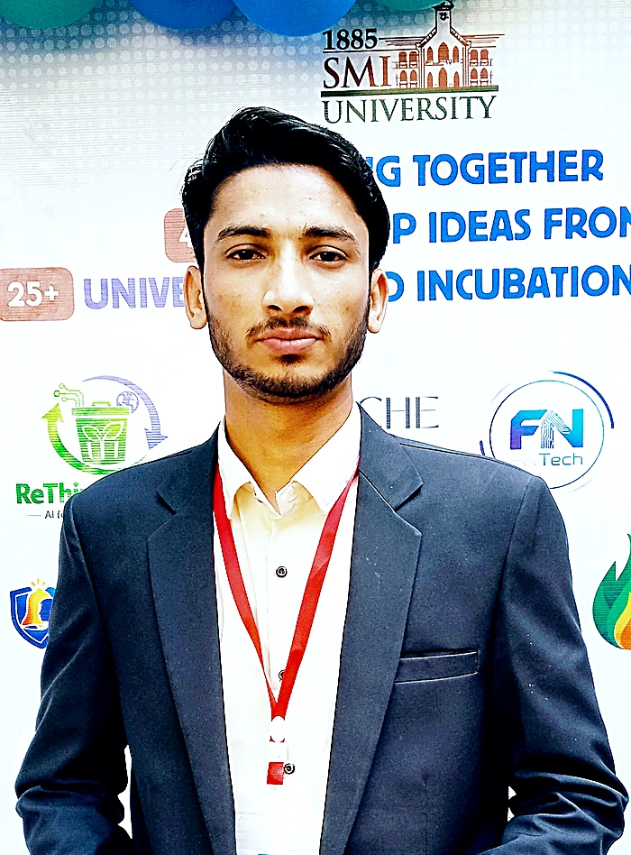

M. Muzammil Shah
Power Platform Consultant & AI Engineer. I build Copilot Studio agents and automation that take manual steps out of how teams work — using Microsoft Copilot Studio, Power Automate, Power Apps, Dataverse, Power Pages, Azure Web Services, Azure AI Foundry, and Azure Machine Learning Studio.

Building the Future
with AI
I'm a Power Platform Consultant & AI Engineer from Karachi, Pakistan, specializing in AI solutions and automation. I architect and deploy Copilot Studio agents, intelligent Power Automate workflows, Power Apps experiences, and Dataverse-driven solutions that improve productivity, reduce manual effort, and create measurable business value.
Currently working as a Power Platform Consultant at 1Dynamics PTY LTD (Australia), where I design and deploy production AI and automation solutions using Microsoft Copilot Studio, Power Automate, Power Apps, Dataverse, Power Pages, Azure Web Services, Azure AI Foundry, and Azure Machine Learning Studio. I am also the founder of JobVibe AI, an AI-powered recruitment automation platform, and I teach Artificial Intelligence at Bano Qabil (Alkhidmat Foundation Pakistan). As an Associate Microsoft Student Ambassador, I lead sessions on Azure ML, Generative AI, and RAG systems at SMIU.
I'm also a skilled ML/DL engineer with deep expertise in Python-based AI systems—from NLP and Computer Vision (OpenCV, YOLO) to end-to-end Generative AI pipelines (STT → LLM → TTS). I focus on systems that hold up in production rather than demos.
Professional Journey
Hands-on roles at international and local tech organizations
- Teach Artificial Intelligence on Alkhidmat Foundation's free IT education programme, training students across Karachi campuses
- Deliver hands-on modules in Python, Machine Learning, NLP, and Generative AI & AI agents — fundamentals through to working projects
- Mentor students on portfolio-ready builds, code review, and preparation for their first technical roles
- Architected and deployed AI agents in Microsoft Copilot Studio with multi-topic flows, intelligent routing, and Adaptive Cards UI for seamless user engagement
- Designed and automated enterprise workflows using Power Automate, Power Apps, Dataverse, and Power Pages integrations to remove manual steps and improve operational efficiency
- Implemented scheduled automation and cloud workflows using Azure Web Services, Azure AI Foundry, and Azure Machine Learning Studio with monitoring, daily progress tracking, and SLA compliance
- Founded and built JobVibe AI, an AI-powered recruitment automation platform that turns hiring into a fast, fair, and data-driven process
- Shipped AI resume screening with automated shortlisting that reads a job description and ranks applicants without manual review
- Built real-time AI interviews — generated question sets plus live scoring across communication, confidence, reasoning, and knowledge
- Designed percentile-based hiring reports so candidates are compared on evidence rather than background
- Developed CallBotX — a real-time voice AI agent with RAG retrieval, end-to-end STT → LLM → TTS pipeline, and natural conversation management (Flask, Server-Sent Events, Groq LLM)
- Built scalable n8n automation workflows including RAG Research Assistant, WhatsApp Support Bot, and conversational LLM agents—reducing manual support overhead
- Deployed VectorShift agents for content automation: YouTube SEO generation, intelligent blog article writing, and resume question-answering systems
- Built an NLP system for emotion analysis and opinion mining from social media data, producing sentiment reports for downstream analysis
- Created data visualizations for public datasets including COVID-19 pandemic analysis
- Engineered end-to-end data pipelines using Python (Pandas, NumPy, Matplotlib, Scikit-learn) with rigorous data cleaning, transformation, and exploratory analysis
- Led technical workshops on Azure Machine Learning Studio pipelines for 100+ students, simplifying complex ML concepts and driving adoption of cloud ML tools
- Delivered sessions on Generative AI and Sora on Azure, covering prompting, deployment and practical use cases
- Showcased RAG systems and knowledge-base copilots to the campus community
- Mentored 50+ students on AI fundamentals, career pathways, and Microsoft ecosystem opportunities
Technical Expertise
A broad toolkit spanning AI engineering, cloud platforms, data science, and automation
What I've Built
25+ projects spanning AI agents, voice bots, NLP, computer vision, and data science
Academic Background
Focused on machine learning, deep learning, NLP, computer vision, and AI-driven system design. Completed hands-on projects in all major AI domains. Served as campus leader as Associate Microsoft Student Ambassador throughout the degree.
Foundation in mathematics, physics, and computer science that laid the groundwork for pursuing Artificial Intelligence at the university level.
Learning & Credentials
Continuously upskilling across cloud AI, data science, and machine learning
Knowledge Sessions
I've Delivered
Technical workshops & keynotes as Associate Microsoft Student Ambassador at SMIU — Azure AI, Generative AI, automation, and cloud
Let's Build
Something Great
Open to Power Platform and AI engineering roles, and to consulting engagements.